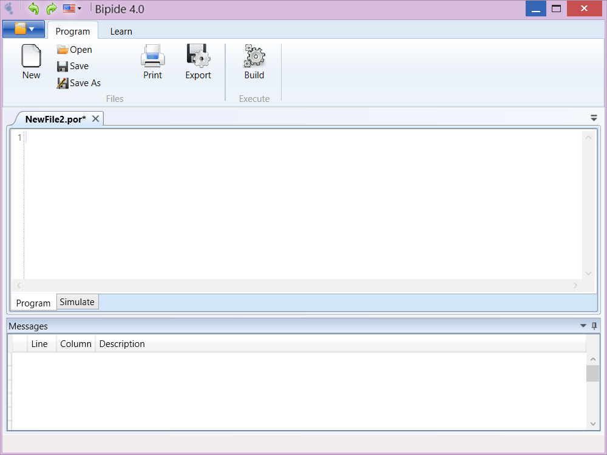

Nesta seção são apresentadas as funcionalidades do BIPIDE.
- Módulo Programação - Módulo de programação em Portugol e C.
- Módulo Simulação - Módulo que permite simulação do algoritmo nas arquiteturas dos processadores BIP
- Simulador - Simulação em todas as versões dos processadores BIP.
- Simulador de Instruções - Permite a prática através da simulação de cada instrução
- Ajuda - Módulo com Fundamentos sobre o BIP, Linguagem Portugol, Linguagem C e interface do sistema.
